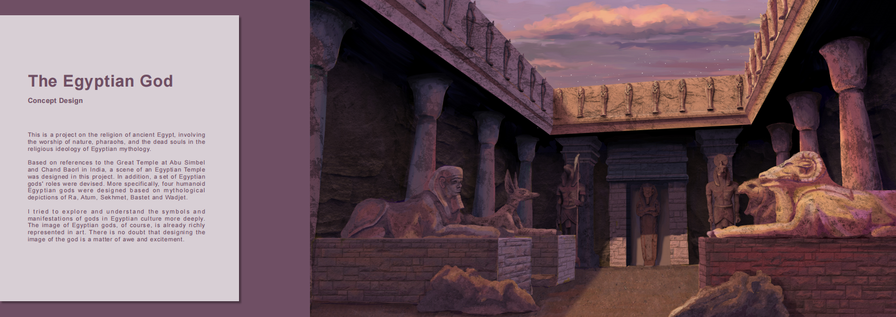
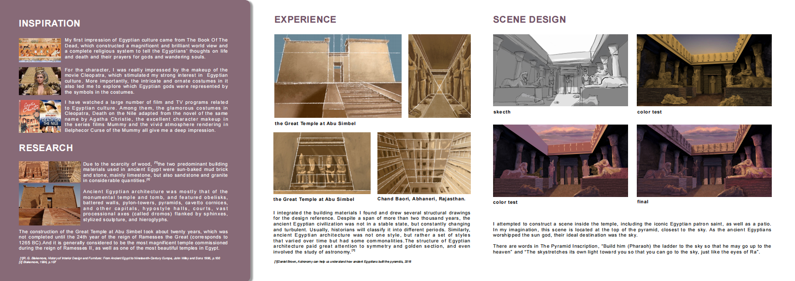
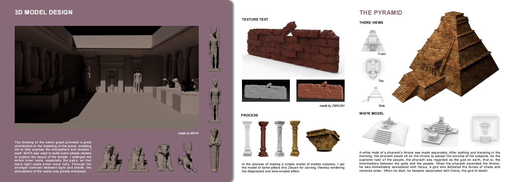
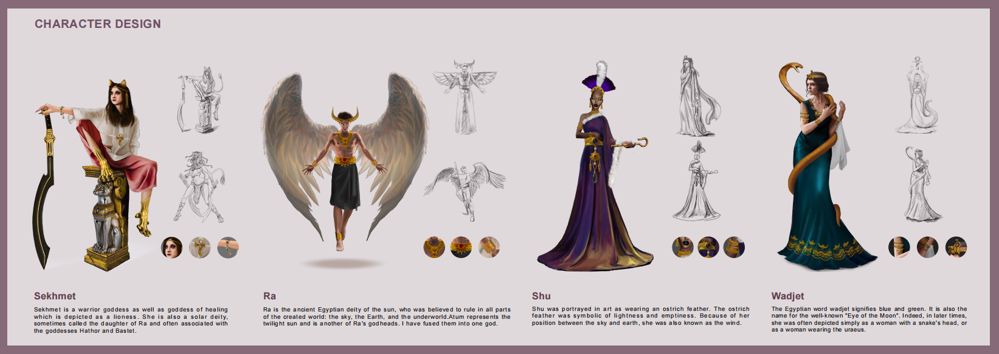

The Egyptian God
A concept-design project on ancient Egyptian mythology — an Egyptian temple scene and a set of humanoid deities, taken from research to 2D concept to 3D.
About
This is a project on the religion of ancient Egypt, involving the worship of nature, pharaohs, and the dead souls in the religious ideology of Egyptian mythology.
Based on references to the Great Temple at Abu Simbel and Chand Baori in India, a scene of an Egyptian temple was designed in this project. In addition, a set of Egyptian gods' roles were devised — four humanoid Egyptian gods designed from the mythological depictions of Ra, Atum, Sekhmet, Bastet and Wadjet.
I tried to explore and understand the symbols and manifestations of the gods in Egyptian culture more deeply. The image of the Egyptian gods is, of course, already richly represented in art — and there is no doubt that designing the image of a god is a matter of awe and excitement.
Design Highlights
- Environment concept — an Egyptian temple interior, designed from references to the Great Temple at Abu Simbel and the Chand Baori stepwell in India.
- Deity character design — four humanoid Egyptian gods — Ra, Sekhmet, Shu and Wadjet — designed from their mythological depictions and symbolism.
- Research-driven — grounded in Egyptian religion, architecture and iconography, from the Book of the Dead to temple construction.
- From concept to 3D — taken beyond 2D: the temple and props modelled in Maya, with column and texture tests in ZBrush.
Concept Boards



